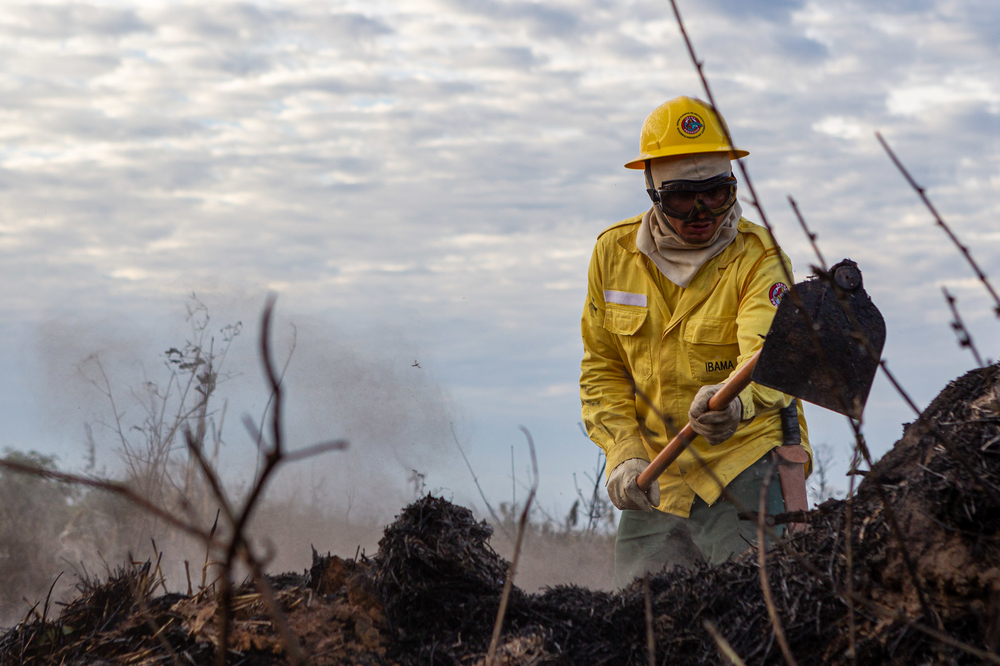

O monitoramento e análise de queimadas são essenciais para proteger o meio ambiente e as comunidades.
CENTRO INTEGRADO MULTIAGÊNCIAS DE COORDENAÇÃO OPERACIONAL NACIONAL - CIMAN
Informações destinadas para análise e observações voltadas ao Ciman.

MANEJO INTEGRADO DO FOGO - AMBIENTE DE PLANEJAMENTO
O manejo integrado do fogo promove a harmonia entre prevenção e uso controlado.
Opinião de quem usa o Sisfogo
"Trabalho como técnico em manejo florestal há mais de 10 anos, e o Sisfogo tem sido uma ferramenta indispensável no nosso dia a dia. Antes, tínhamos dificuldades em acessar dados atualizados sobre queimadas e incêndios, o que muitas vezes comprometia a nossa capacidade de resposta. Com o Sisfogo, conseguimos armazenar e tratar todas as informações necessárias de maneira integrada e rápida. As estatísticas e indicadores fornecidos pelo sistema nos ajudam a planejar ações preventivas e a avaliar a eficácia das nossas políticas de manejo do fogo. Sem dúvida, é um avanço significativo na nossa área."
- Carlos Ferreira / Técnico em Manejo Florestal
"Sou pesquisadora em ciências ambientais e utilizo o Sisfogo para realizar estudos sobre os impactos das queimadas controladas e dos incêndios florestais no ecossistema. A quantidade e a qualidade dos dados disponíveis no sistema são impressionantes. O Sisfogo facilita a integração de informações de diferentes fontes e garante a confiabilidade dos dados. Isso é essencial para desenvolver pesquisas robustas e fundamentadas, que podem subsidiar políticas públicas mais eficazes. Além disso, a interoperabilidade com outros sistemas amplia ainda mais nossas possibilidades de análise."
- Ana Maria / Pesquisadora em Ciências Ambientais
"Sou produtor rural e sempre tive preocupação com a questão das queimadas e incêndios florestais na minha propriedade e região. O Sisfogo tem sido um aliado importante para nós, agricultores. Através do sistema, temos acesso a informações atualizadas e confiáveis sobre a situação das queimadas controladas e queimadas prescritas. Isso nos ajuda a tomar decisões mais seguras e a cumprir com as normas de manejo integrado do fogo, evitando multas e prejuízos. Além disso, o Sisfogo promove uma maior integração entre os produtores e os órgãos responsáveis, o que fortalece a nossa capacidade de prevenção e controle."
- João Pereira / Produtor Rural
"Como coordenador de Defesa Civil, a tempestividade das informações é crucial para nossas operações. O Sisfogo nos proporciona dados em tempo real sobre queimadas e incêndios florestais, permitindo uma resposta rápida e eficaz. A integração com redes e sistemas de dados facilita a comunicação entre diferentes órgãos e equipes, melhorando a coordenação das ações de combate e prevenção. Com o Sisfogo, conseguimos garantir a segurança das comunidades e a proteção do meio ambiente de forma muito mais eficiente."